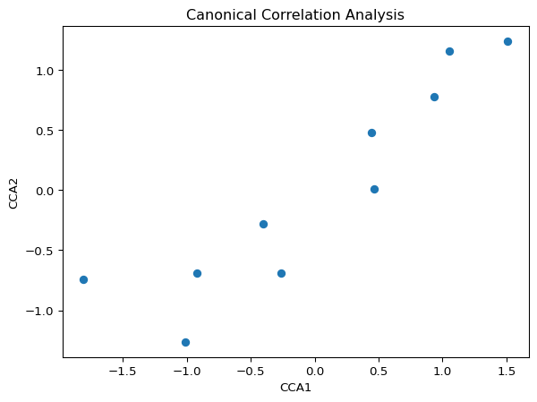
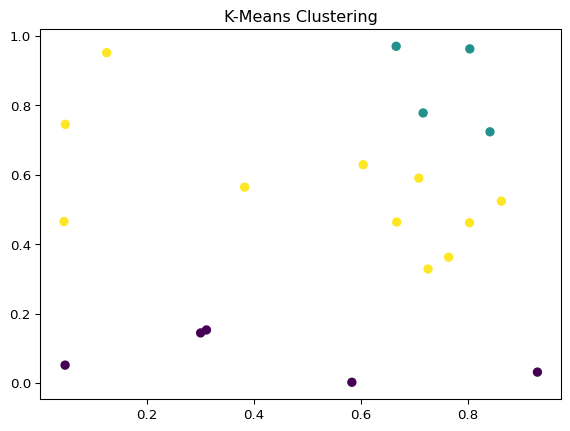

Often data has multi dimensions and it is not easy to analyze it. Multivariate analysis is a set of statistical techniques used to analyze data with multiple variables. It helps in understanding the relationships between variables and identifying patterns in complex data.
What can be done to analyze multi-dimensional data?
Dimensionality Reduction: Simplifies complex datasets by reducing the number of variables.
Pattern Recognition: Identifies underlying patterns and trends in data.
Feature Selection: Selects relevant variables for modeling and prediction.
Dimensionality Reduction Techniques
Principal Component Analysis (PCA): reduces the dimensionality of data by transforming variables into uncorrelated components. It retains most of the variance in the data while reducing noise and redundancy. The PCA decomposition is based on the eigenvalues and eigenvectors of the covariance matrix of the data to identify the principal components with the highest variance.
Clustering is an unsupervised learning technique used to group similar data points based on patterns. In chemistry and materials science, clustering helps in categorizing material properties, identifying experimental trends, and classifying samples.
k-Means Clustering: Partitions data into k clusters based on similarity.
import numpy as npimport matplotlib.pyplot as pltfrom sklearn.cluster import KMeans# Example datasetX = np.random.rand(20, 2)kmeans = KMeans(n_clusters=3)kmeans.fit(X)labels = kmeans.labels_# Plot Clustersplt.scatter(X[:, 0], X[:, 1], c=labels, cmap='viridis')plt.title('K-Means Clustering')plt.show()

Hierarchical Clustering: Builds a tree of clusters using agglomerative or divisive methods.
import numpy as npimport matplotlib.pyplot as pltfrom sklearn.cluster import AgglomerativeClustering# Example datasetX = np.random.rand(20, 2)agg = AgglomerativeClustering(n_clusters=3)labels = agg.fit_predict(X)# Plot Clustersplt.scatter(X[:, 0], X[:, 1], c=labels, cmap='viridis')plt.title('Hierarchical Clustering')plt.show()

Source Code
---title: "Advanced Statistical Analysis"execute: echo: True eval: Trueother-links: - text: "Download Code" href: "https://raw.githubusercontent.com/stkroe/PythonForChemists/main/course/notebooks/MultiVariantAnalysis.ipynb" icon: "journal"code-links: - text: "Open in Colab" href: "https://colab.research.google.com/github/stkroe/PythonForChemists/blob/main/course/notebooks/MultiVariantAnalysis.ipynb" icon: "laptop"---Often data has multi dimensions and it is not easy to analyze it. <br>Multivariate analysis is a set of statistical techniques used to analyze data with multiple variables.It helps in understanding the relationships between variables and identifying patterns in complex data. What can be done to analyze multi-dimensional data?- **Dimensionality Reduction:** Simplifies complex datasets by reducing the number of variables.- **Pattern Recognition:** Identifies underlying patterns and trends in data.- **Feature Selection:** Selects relevant variables for modeling and prediction.## Dimensionality Reduction Techniques {.unnumbered}1. **Principal Component Analysis (PCA):** reduces the dimensionality of data by transforming variables into uncorrelated components. It retains most of the variance in the data while reducing noise and redundancy.The PCA decomposition is based on the eigenvalues and eigenvectors of the covariance matrix of the data to identify the principal components with the highest variance.```{python}import numpy as npimport matplotlib.pyplot as pltfrom sklearn.decomposition import PCA# Sample datasetX = np.random.rand(10, 3)pca = PCA(n_components=2)X_pca = pca.fit_transform(X)# Plot PCA resultsplt.scatter(X_pca[:, 0], X_pca[:, 1])plt.xlabel('PC1')plt.ylabel('PC2')plt.title('PCA Analysis')plt.show()```Sometimes the data needs to be scaled before applying PCA. The `StandardScaler` from `sklearn` can be used to scale the data.```{python}import numpy as npimport matplotlib.pyplot as pltfrom sklearn.preprocessing import StandardScalerfrom sklearn.decomposition import PCA# Standardizing Datascaler = StandardScaler()X_scaled = scaler.fit_transform(X)# Applying PCApca = PCA(n_components=2)X_pca = pca.fit_transform(X_scaled)print("Explained Variance Ratio:", pca.explained_variance_ratio_)# Plot PCA resultsplt.scatter(X_pca[:, 0], X_pca[:, 1])plt.xlabel('PC1')plt.ylabel('PC2')plt.title('PCA Analysis')plt.show()```**Independent Component Analysis (ICA):** Separates a multivariate signal into additive subcomponents.```{python}import numpy as npimport matplotlib.pyplot as pltfrom sklearn.decomposition import FastICA# Sample datasetX = np.random.rand(10, 3)ica = FastICA(n_components=2)X_ica = ica.fit_transform(X)# Plot ICA resultsplt.scatter(X_ica[:, 0], X_ica[:, 1])plt.xlabel('ICA1')plt.ylabel('ICA2')plt.title('Independent Component Analysis')plt.show()```**t-Distributed Stochastic Neighbor Embedding (t-SNE):** Visualizes high-dimensional data in lower dimensions.```{python}import numpy as npimport matplotlib.pyplot as pltfrom sklearn.manifold import TSNE# Sample datasetX = np.random.rand(10, 3)tsne = TSNE(n_components=2,perplexity=3,learning_rate='auto')X_tsne = tsne.fit_transform(X)# Plot t-SNE resultsplt.scatter(X_tsne[:, 0], X_tsne[:, 1])plt.xlabel('t-SNE1')plt.ylabel('t-SNE2')plt.title('t-SNE Analysis')plt.show()```**UMAP (Uniform Manifold Approximation and Projection):** Reduces the dimensionality of data while preserving local and global structure.```{python}import numpy as npimport matplotlib.pyplot as pltimport umap# Sample datasetX = np.random.rand(10, 3)umap_model = umap.UMAP(n_components=2)X_umap = umap_model.fit_transform(X)# Plot UMAP resultsplt.scatter(X_umap[:, 0], X_umap[:, 1])plt.xlabel('UMAP1')plt.ylabel('UMAP2')plt.title('UMAP Analysis')plt.show()```**Factor Analysis:** Identifies latent factors that explain the variance in observed variables.```{python}import numpy as npimport matplotlib.pyplot as pltfrom sklearn.decomposition import FactorAnalysis# Sample datasetX = np.random.rand(10, 3)fa = FactorAnalysis(n_components=2)X_fa = fa.fit_transform(X)# Plot Factor Analysis resultsplt.scatter(X_fa[:, 0], X_fa[:, 1])plt.xlabel('Factor 1')plt.ylabel('Factor 2')plt.title('Factor Analysis')plt.show()```**Canonical Correlation Analysis (CCA):** Analyzes the relationship between two sets of variables.```{python}import numpy as npimport matplotlib.pyplot as pltfrom sklearn.cross_decomposition import CCA# Sample datasetX = np.random.rand(10, 3)Y = np.random.rand(10, 3)cca = CCA(n_components=2)X_c, Y_c = cca.fit_transform(X, Y)# Plot CCA resultsplt.scatter(X_c[:, 0], Y_c[:, 0])plt.xlabel('CCA1')plt.ylabel('CCA2')plt.title('Canonical Correlation Analysis')plt.show()```### Clustering Techniques {.unnumbered}Clustering is an unsupervised learning technique used to group similar data points based on patterns. In chemistry and materials science, clustering helps in categorizing material properties, identifying experimental trends, and classifying samples.- **k-Means Clustering:** Partitions data into k clusters based on similarity.```{python}import numpy as npimport matplotlib.pyplot as pltfrom sklearn.cluster import KMeans# Example datasetX = np.random.rand(20, 2)kmeans = KMeans(n_clusters=3)kmeans.fit(X)labels = kmeans.labels_# Plot Clustersplt.scatter(X[:, 0], X[:, 1], c=labels, cmap='viridis')plt.title('K-Means Clustering')plt.show()```- **Hierarchical Clustering:** Builds a tree of clusters using agglomerative or divisive methods.```{python}import numpy as npimport matplotlib.pyplot as pltfrom sklearn.cluster import AgglomerativeClustering# Example datasetX = np.random.rand(20, 2)agg = AgglomerativeClustering(n_clusters=3)labels = agg.fit_predict(X)# Plot Clustersplt.scatter(X[:, 0], X[:, 1], c=labels, cmap='viridis')plt.title('Hierarchical Clustering')plt.show()```